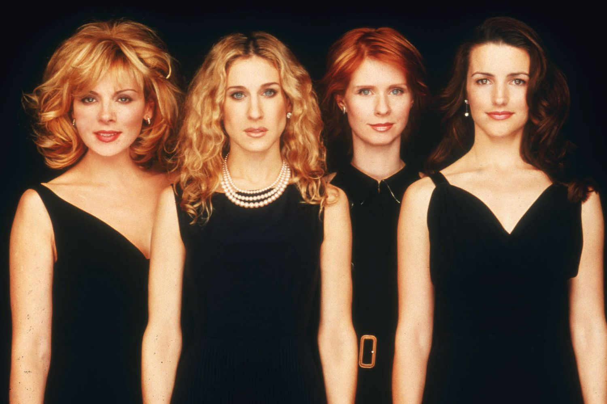
Relembre os 14 looks mais icônicos de Sarah Jessica Parker em Sex & The City
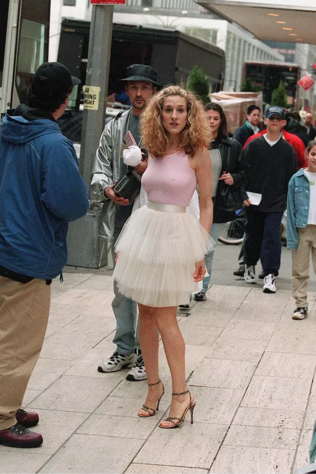
Até aqueles que não ficaram viciados em Sex and the City vão reconhecer esse look. Este tutu rosa-bebê foi o primeiro visual oficial de Carrie, com um top branco e sandálias de tira que ela usou na abertura da série.
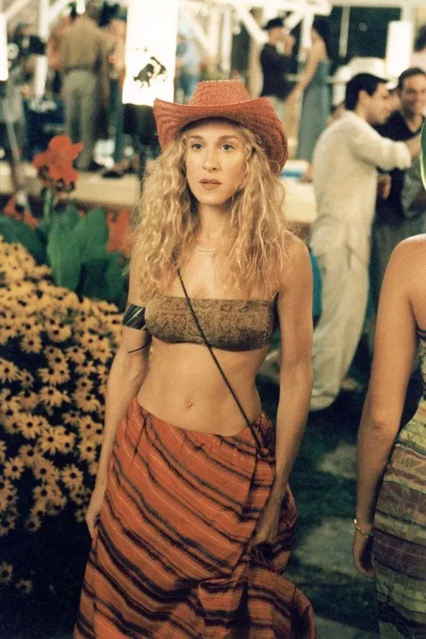
Para a maioria das pessoas, os Hamptons significam jardins milimetricamente plantados, casas brancas e piscinas turquesas. Mas para Carrie, uma viagem à casa na praia de um milionário foi a oportunidade perfeita para homenagear o Velho Oeste. No episódio 17 da 2ª temporada, a senhorita Bradshaw encontrou o Mr. Big e sua namorada Natasha, de 20 e tantos anos, enquanto usava um top com estampa de escamas reptilianas, uma saia listrada e um chapéu de cowboy.
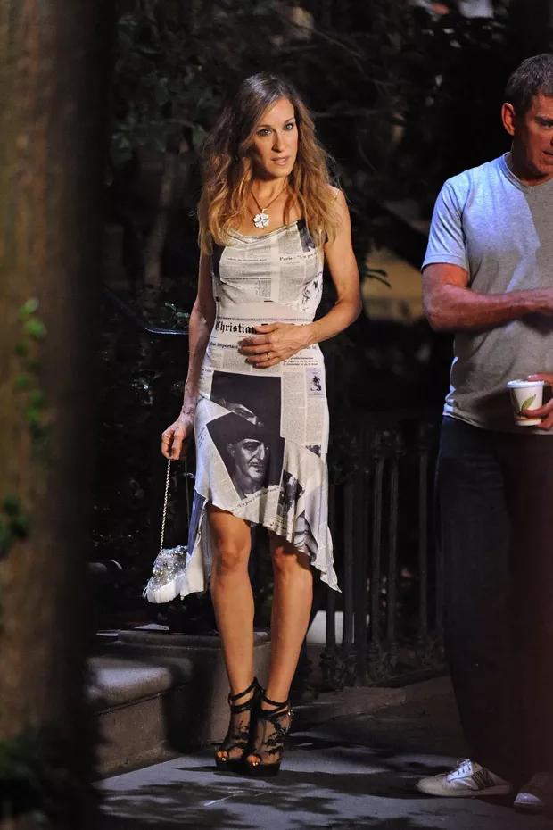
SJP se tornou a garota-propaganda-não-oficial do vestido jornal, desfilado pela primeira vez por Angie Schmidt na temporada de outono/inverno 2000 da Christian Dior de, é claro, John Galliano. Carrie usou a peça no episódio 17 da 3ª temporada.
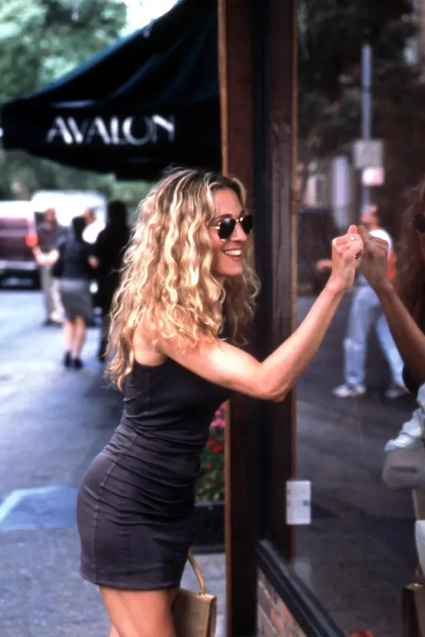
Esse look simples (que faz jus à sigla ainda mais simples, LBD, de little black dress), é a prova de Carrie consegue ficar fabulosa em qualquer coisa. É verdade que o vestido em questão está mais para cinza chumbo ou carvão, mas não importa. Ela apostou na peça em duas ocasiões. A primeira, em um encontro com Vaughn Wysel no episódio 15 da 2ª temporada e, a segunda, em um almço com as amigas Miranda, Charlotte e Samantha.
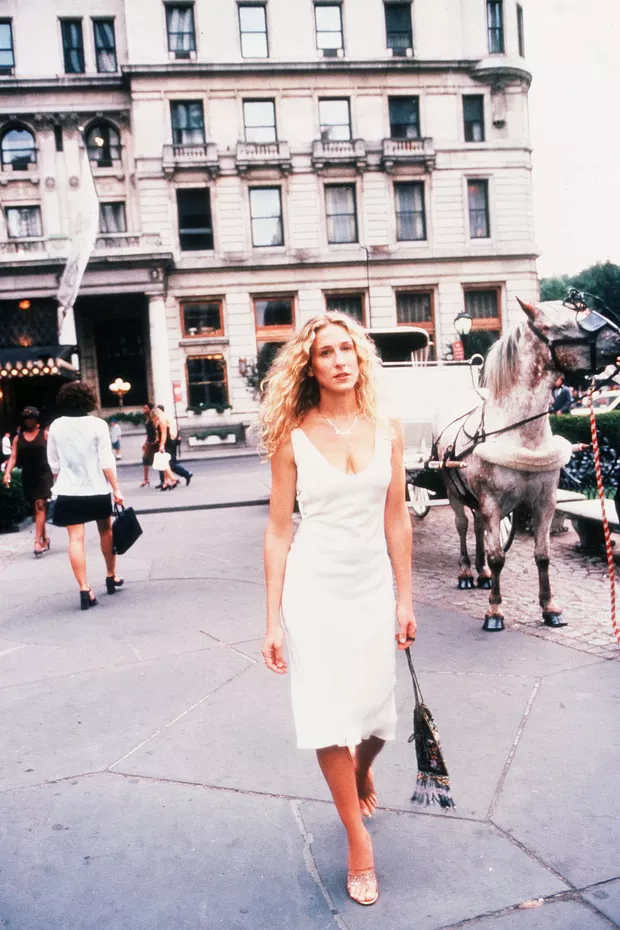
A moda adora roupas-manifesto. E considerando o histórico turbulento de romances de Carrie, muitos de seus looks poderiam ser considerados "vestidos vingança". Mas esse simples vestido branco, que ela está usando quando encontra Big saindo da própria festa de noivado, é a definição do conceito. Depois de tantas comparações (feitas por Carrie) entre a história sua história de amor com Big e a dos personagens em Nosso Amor de Ontem (1973), ela esbarra com o ex e repete frases do filme. Icônico.
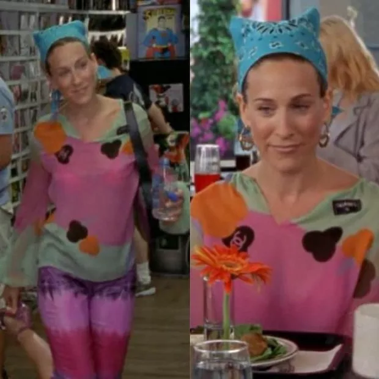
Um de seus visuais mais ousados, esse look não precisa ser descirto com muitas palavras. Como se as calças tie-dye e a bandana turquesa não fossem suficientes, Carrie usou uma blusa colorida da Chanel ao contrário e – como sempre – ficou incrível.
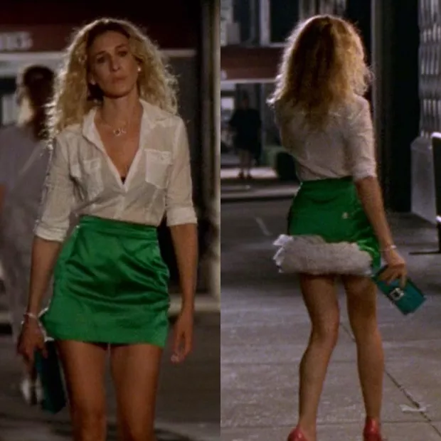
Essa saia verde-sapo de Vivienne Westwood é a definiação que, às vezes, a melhor entrada para uma festa é pela porta dos fundos. Bizarro? Talvez. Mas Carrie conseguiu entregar um look com o tule e a anquinha, além da camisa branca aberta e os saltos vermelhos.
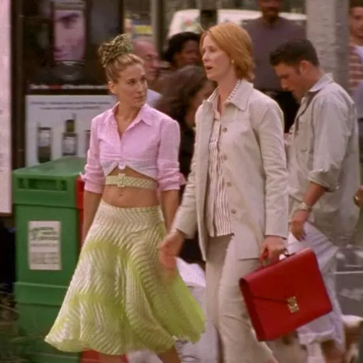
Por quê? Ou melhor, por que não? Aqui, Carrie usou uma saia estampada de cintura-baixa verde-limão com um cinto combinando, passando pelo torso à mostra. A camisa rosa é a cereja do bolo/look e nada ficou sobrando: ela garantiu que o excesso de tecido ficasse preso dentro do sutiã.
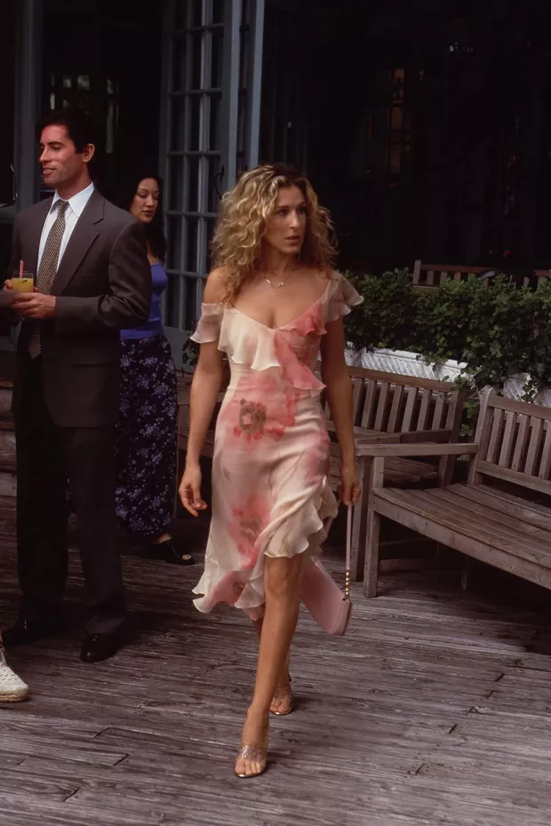
Duas versões desse vestido midi floral – da coleção Resort 2001 de Richard Tyler – foram usadas para o episódio 18 da 3ª temporada, já que Carrie caiu de surpresa, junto com o Mr. Big, em uma lagoa do Central Park de Nova York. Um dos vestidos foi vendido para a caridade em 2001 e outro foi parar nos arquivos do Museu Victoria, na Austrália, depois de passar uma temporada na coleção particular da própria Sarah Jessica Parker.
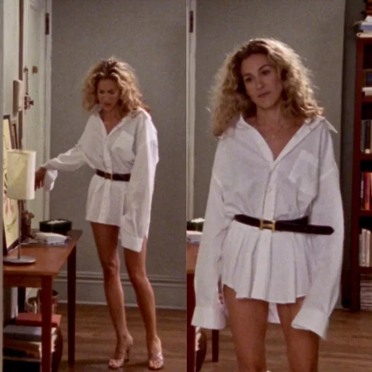
Depois do mergulho inusitado, Carrie fez do limão uma limonada, usando uma camisa do guarda-roupa do ex. O resultado? Um look glamouroso e inspirador, que ficou ainda mais divino com um cinto da Hermès.
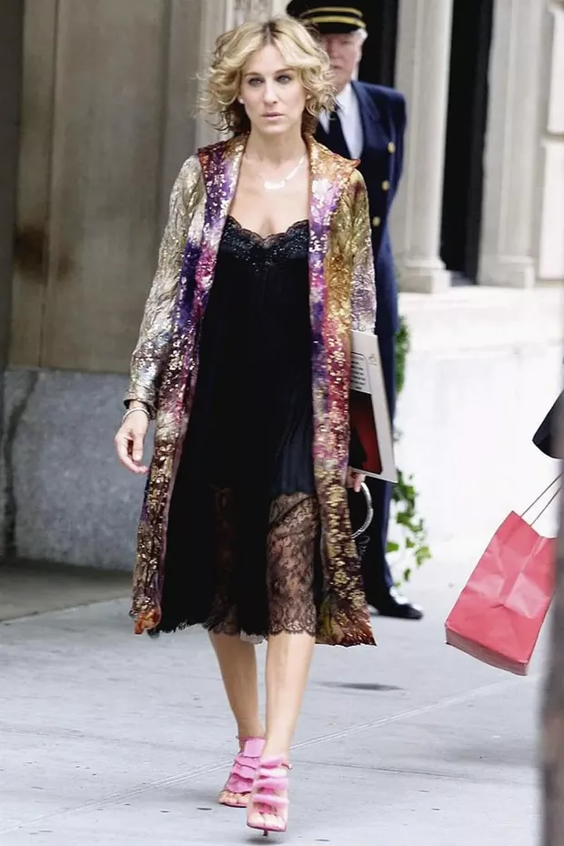
Esse look – uma camisola preta de renda, com um robe metalizado e sapatos Louboutin – foi central no importante episódio 18 da 4ª temporada. Ela escolhe o visual para usar no dia em Big deixa Nova York e, coincidentemente, na mesma data do parto de Miranda.
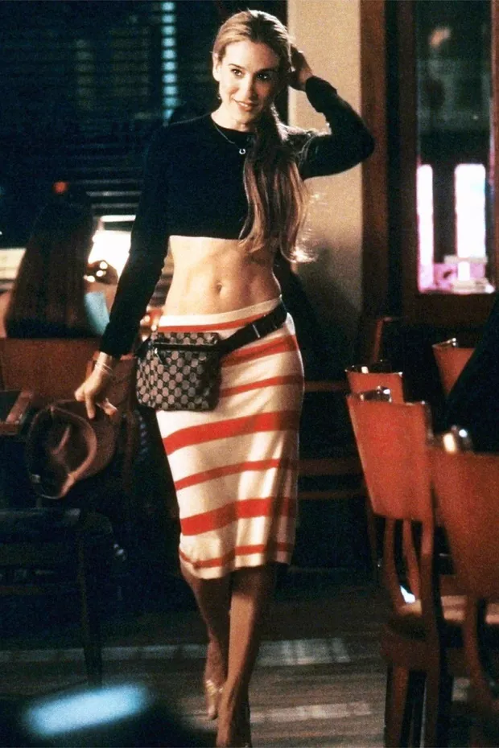
Emily Ratajkowski não inventou a tendência de "mostrar o tanquinho". Carrie tinha uma coleção impressionanete de tops, incluindo um preto de mangas longas que ela usou com uma saia listrada (ambos da Prada, primavera/verão 2001) e uma pochete da Gucci. Tudo isso no episódio 7 da 4ª temporada, quando ela encontra Aidan flertando com uma barista.
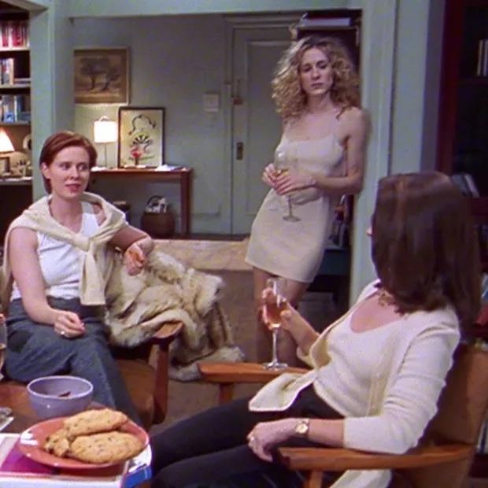
Definitivamente o look clássico de Carrie para um primeira encontra. No episódio 6 da primeira temporada, ela usou o vestido camisola da DKNY – apelidado de “naked dress” muito antes do clã Kardashian-Jenners apostaram no visual nos degraus do Met – para posar nas fotos promocionais de sua coluna no jornal. Em seguida, ela teve seu primeiro date com Big e todos nós sabemos o que aconteceu depois.
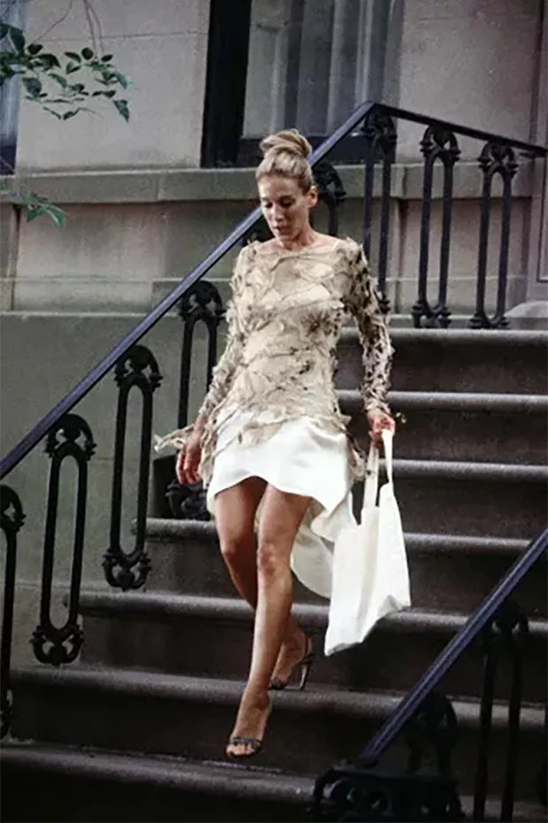
Para a maioria das pessoas, os Hamptons significam jardins milimetricamente plantados, casas brancas e piscinas turquesas. Mas para Carrie, uma viagem à casa na praia de um milionário foi a oportunidade perfeita para homenagear o Velho Oeste. No episódio 17 da 2ª temporada, a senhorita Bradshaw encontrou o Mr. Big e sua namorada Natasha, de 20 e tantos anos, enquanto usava um top com estampa de escamas reptilianas, uma saia listrada e um chapéu de cowboy.